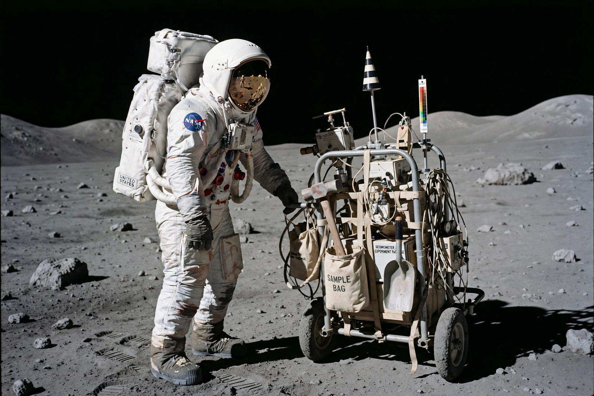

Apollo 14
From Wikipedia, the free encyclopedia
| Apollo 14 | |
|---|---|
| Crew | Alan Shepard, Stuart Roosa, Edgar Mitchell |
| Launch | 31 January 1971 |
| Landing site | Fra Mauro |
| Duration | 9 days |

Shepard works at Fra Mauro, February 1971.Apollo 14 was the eighth crewed mission of the Apollo program and the third to land on the Moon, launched on 31 January 1971. It returned the programme to flight after the near-disaster of Apollo 13, sending commander Alan Shepard — America's first man in space, flying a decade later after surgery restored him to flight status — Stuart Roosa and Edgar Mitchell to the Fra Mauro highlands, Apollo 13's original target.
Shepard and Mitchell landed in the LM Antares on 5 February and made two moonwalks, using a hand cart (the Modular Equipment Transporter) to haul samples. They collected about 43 kg of lunar material, including the famous "Big Bertha" rock, later found to contain a fragment of some of the oldest known Earth rock.
Golf and near-misses
The mission is famous for Shepard's improvised golf shots: he smuggled two golf balls and a club head, attached it to a sample handle, and hit the balls across the Fra Mauro plain — the second, he claimed, went "miles and miles". Less happily, the two moonwalkers became disoriented searching for Cone crater's rim and turned back, at controllers' urging, while very close to it; later imagery showed how near they had come.
Docking had nearly failed at the mission's start, when the capture mechanism refused to latch on the first five attempts; a sixth succeeded, and the mission proceeded. Roosa carried hundreds of tree seeds in orbit, which were planted worldwide as "Moon trees" after the flight.
See also
Alan Shepard · Apollo 13 · Fra Mauro formation · Apollo program